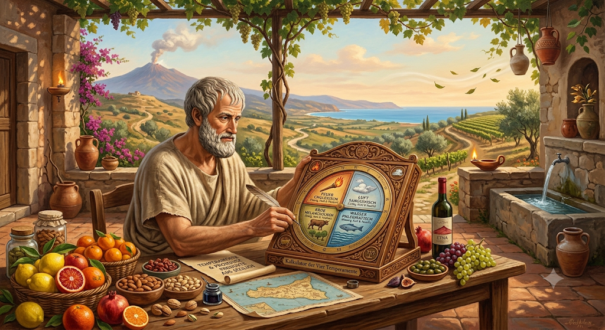
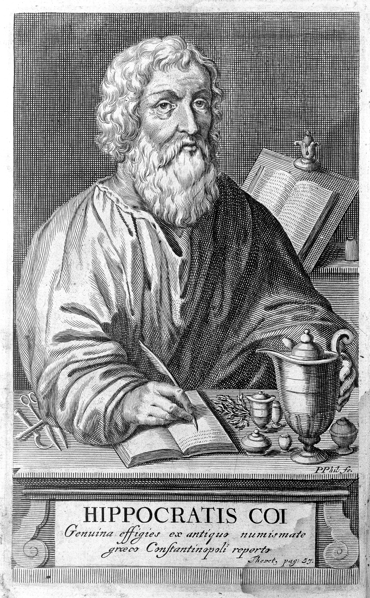
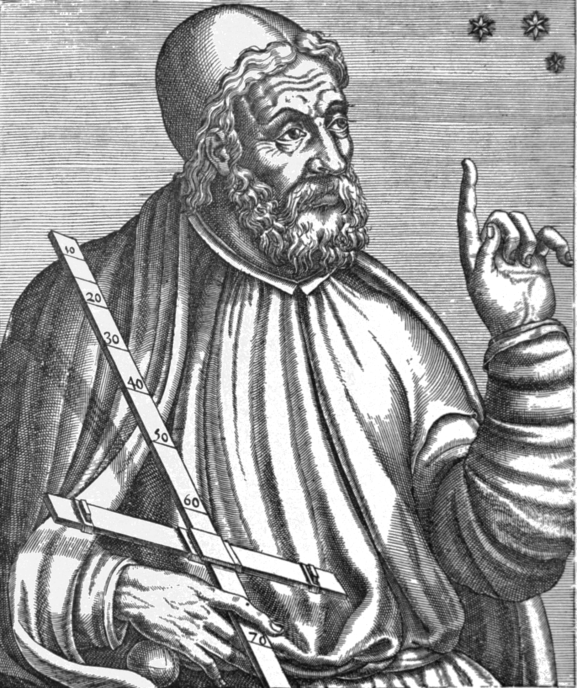

Von Empedokles' sizilianischen Wurzelkräften leitete Hippokrates die vier Körpersäfte ab,
Claudius Ptolemäus ordnete ihnen die Planeten zu, und Galen von Pergamon wandte die ganze
Lehre erstmals systematisch auf die Nahrungsmittel selbst an — sein Katalog in
De Alimentorum Facultatibus ist der unmittelbare Vorfahr dieser Seite. Über die arabische Medizin —
Ibn Sīnās Kanon wurde ihr Jahrtausendbuch — wanderte die Lehre als Unani-Tibb
(„ionische Heilkunde") nach Persien und Indien, wo sie sich mit der ayurvedischen Dosha-Lehre
verband und bis heute gelebte Alltagspraxis ist. In Europa war die Zuordnung von Lebensmitteln
zu Temperament und Qualität — heiß, kalt, feucht, trocken, in vier Graden — vom
Regimen Sanitatis Salernitanum bis zum Tacuinum Sanitatis das gesamte
Mittelalter hindurch gängige ärztliche Praxis. Erst die moderne Medizin löste das System ab —
als Kulturgeschichte aber lebt es fort, und auf dieser Seite als Spiel mit einer
2500-jährigen sizilianischen Idee.

✦Bild — Foto folgt
Vier bedeutende Lehrmeister
Empedokles von Akragas
ca. 494–434 v. Chr. · Agrigent, Sizilien
Philosoph, Arzt und Dichter aus dem heutigen Agrigent. Er lehrte als Erster die vier Wurzelkräfte (rhizómata) — Feuer, Wasser, Luft, Erde — vereint und getrennt durch Liebe und Streit. Der Legende nach endete er im Krater des Ätna: zurück ins Element.

Hippokrates von Kos
ca. 460–370 v. Chr. · Kos
Der berühmteste Arzt der Antike. Die ihm zugeschriebene Schrift De Natura Hominis — wohl von seinem Schwiegersohn Polybos verfasst — leitete aus Empedokles' Wurzelkräften erstmals die vier Körpersäfte ab: Blut, gelbe Galle, schwarze Galle, Schleim. Damit war die Temperamentenlehre geboren.

Claudius Ptolemäus
ca. 100–170 n. Chr. · Alexandria
Astronom, Geograph und Astrologe in Alexandria. Sein Tetrabiblos ordnete jedem Planeten die Qualitäten heiß, kalt, feucht und trocken zu — Sonne und Mars feurig-trocken, Venus und Jupiter warm-feucht, Saturn kalt, der Mond kalt-feucht. So verband sich die Säftelehre mit der Sprache der Sterne, die bis heute in den Planetenzeichen unserer Produkte nachklingt.
Galen von Pergamon
129 – ca. 216 n. Chr. · Pergamon & Rom
Leibarzt der Kaiser und Vollender der Säftelehre. In De Alimentorum Facultatibus — im Original online bei der Corpus Medicorum Graecorum — wandte er die Lehre erstmals systematisch auf die Nahrungsmittel selbst an: ein Katalog von Getreide, Hülsenfrüchten, Fleisch und Fisch, jedes nach Grad von heiß, kalt, feucht und trocken bestimmt.
✦ Ein Auszug aus Galens Original ✦
De Alimentorum Facultatibus katalogisiert Hunderte Nahrungsmittel — hier ein
verifiziertes Beispiel aus dem Original, stellvertretend für die ganze Methode:
Gerste (κριθή)kalt & feucht — von Natur aus, so Galen wörtlich
Das vollständige Werk ordnet auf diese Weise systematisch Getreide, Hülsenfrüchte, Fleisch
und Fisch — wer tiefer graben will, findet den griechischen Originaltext oben verlinkt, die
moderne englische Übersetzung mit Kommentar stammt von Owen Powell (Cambridge University
Press, 2003).
✦ Astrologia in Cibus ✦
Die Planeten und ihre Temperamente
Jedes Produkt im Sortiment trägt neben seinem Namen ein Planetenzeichen — die antike Astrologie
ordnete jedem Planeten ein Temperament zu, und über dieses Temperament die Speisen der Erde.
Diese Leiste macht die Zuordnung nachvollziehbar. Ptolemäus war der Erste, der Planeten, Elemente
und Temperamente in seinem Tetrabiblos systematisch zu einem einzigen Lehrgebäude verband
— und lieferte damit den letzten Baustein zu dem Konzept, das dieser Seite zugrunde liegt.
☉ Sol
Cholerisch heiß & trocken
♂ Mars
Cholerisch heiß & trocken
♀ Venus
Sanguinisch als Morgenstern · Melancholisch als Abendstern
♃ Iuppiter
Sanguinisch als Morgenstern · Phlegmatisch als Abendstern
☽ Luna
Phlegmatisch kalt & feucht
☿ Mercurius
Wandelbar — vereint alle vier Humores
Venus und Iuppiter zeigen zwei Gesichter: als Morgenstern (oriental) geben sie feuchte Wärme,
als Abendstern (occidental) die Kühle des Herbstes. Merkur, der wandelbarste Planet, nimmt stets
die Farbe seiner Nachbarn an — seine Speisen, wie die Caponata, vereinen alle vier Qualitäten.
Genau dieses Planetenwissen — Ptolemäus' Zuordnung der Qualitäten heiß, kalt, feucht und trocken
zu den Wandelsternen — gab den Anstoß zur Entwicklung unseres Temperament-Kalkulators: Er
berechnet aus Geburtsdatum, -zeit und -ort die Stellung von Sonne, Mond und Aszendent und
übersetzt sie zurück in die vier Temperamente.
✦ Materia Prima ✦
Die Rohstoffe unserer Produkte
Jedes Produkt im Sortiment geht auf einen Rohstoff der sizilianischen Erde zurück — hier, welchem
Planeten und Temperament die antike Lehre ihn zuordnet:
Rohstoff
Planet
Temperament
Kirschtomate
☉
Cholerisch
Kirschtomate & Paprika
☿
Cholerisch
Datteltomate
☉
Cholerisch
Kapern & Zitrone
☉
Cholerisch
Peperoncino (Arrabbiata)
♂
Cholerisch
Oliven & Kapern
♂
Cholerisch
Sultaninen & Fenchel
☿
Sanguinisch
Aubergine (Norma)
☽
Phlegmatisch
Rosmarin & Oregano
♀
Sanguinisch
Tomate (rein, Passata)
☉
Cholerisch
Wilder Fenchel
♀
Sanguinisch
Mandel & Basilikum (Trapanese)
♀
Sanguinisch
Basilikum
♀
Sanguinisch
Aubergine (Paté)
☽
Phlegmatisch
Peperoncino (Paté)
♂
Cholerisch
Aubergine, Oliven & Kapern (Agrodolce)
☿
Alle vier
Blutorange
☉
Cholerisch
Zitrone
♀
Melancholisch
Mandarine
♀
Melancholisch
Feige
♀
Sanguinisch
Pistazie
♃
Sanguinisch
Mandel (süß, Creme)
♃
Sanguinisch
Haselnuss
♃
Sanguinisch
⚕ Wichtiger Hinweis
Die Zuordnung von Lebensmitteln zu Temperamenten hat auf dieser Seite rein
historischen und unterhaltenden Charakter. Sie ist keine medizinische
Beratung, Diagnose oder Ernährungsempfehlung und entspricht nicht dem heutigen Stand
der Wissenschaft. Bei gesundheitlichen Fragen wende Dich bitte an Arzt oder Ärztin.